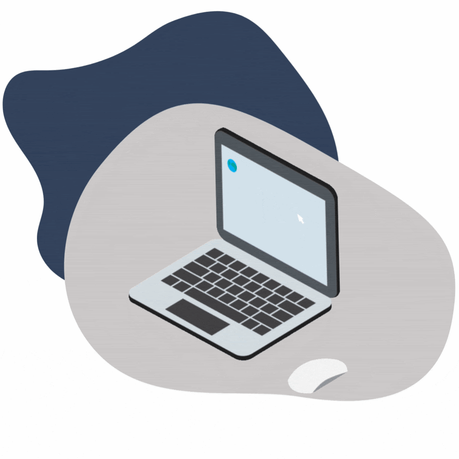

Nós somos a CODE THREE, uma equipe do SENAI formada por um grupo de estudantes motivados e dedicados a aprender e desenvolver suas habilidades em suas áreas de interesse. Cada membro da equipe traz consigo sua própria perspectiva única e conjunto de habilidades, tornando nossa equipe diversa e criativa. Trabalhamos juntos em projetos desafiadores, buscando sempre superar nossos limites e aprender com nossos erros.
